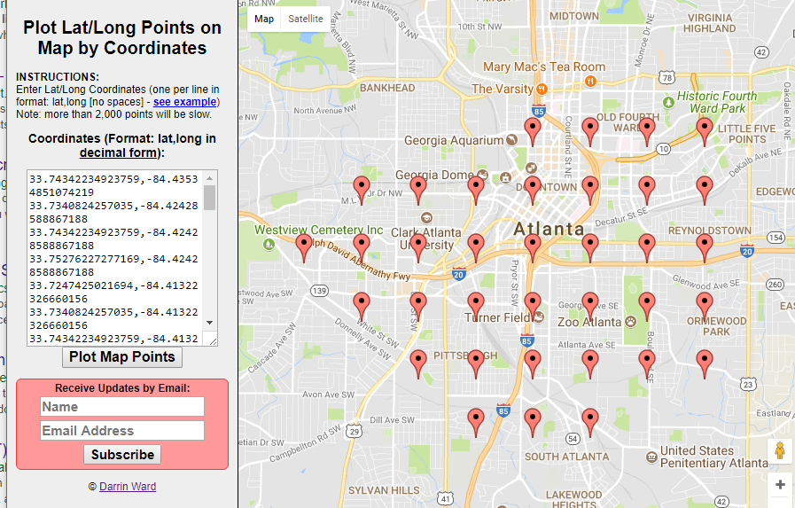

Setup Traffic Pattern Analytics¶
You might be interested in the traffic pattern of a given area. StreetTraffic allows you to sample points/roads within a geospatial region and calculate the average Jamming Factor of those roads.
Note
Jamming Factor is a measurement of traffic flow on a scale from 0 to 10. 10 means the road is stopped or closed, 9 means road has slow traffic, and 0 means free flow.
Spatial Sampling¶
Before we start, you can find the source code of this tutorial at here
Given a polygon, you may use streettraffic.database.TrafficData.spatial_sampling_points_polygon() to generate
spatial sampling points within a given region
For example, create a file named hello_sample.py and copy the following code to the file to setup it up:
import rethinkdb as r
## import custom module
from streettraffic.server import TrafficServer
from streettraffic.predefined.cities import San_Francisco_polygon
settings = {
'app_id': 'F8aPRXcW3MmyUvQ8Z3J9',
'app_code' : 'IVp1_zoGHdLdz0GvD_Eqsw',
'map_tile_base_url': 'https://1.traffic.maps.cit.api.here.com/maptile/2.1/traffictile/newest/normal.day/',
'json_tile_base_url': 'https://traffic.cit.api.here.com/traffic/6.2/flow.json?'
}
## initialize traffic server
server = TrafficServer(settings)
San_Francisco_matrix = server.util.get_area_tile_matrix_url("traffic_json", San_Francisco_polygon, 14, True)
server.start()
conn = server.traffic_data.conn
# City Polygon
Atlanta_polygon = [[33.74775138989557, -84.4464111328125], [33.77144211983988, -84.36058044433594], [33.72548184547877, -84.34684753417969], [33.706062655101206, -84.39800262451172], [33.74775138989557, -84.4464111328125]]
## spatial sampling
sample_points = server.traffic_data.spatial_sampling_points_polygon(Atlanta_polygon)
print(server.traffic_data.format_list_points_for_display(sample_points))
Now double click the hello_sample.py and you should see the folloiwng output in a few seconds:
use https://www.darrinward.com/lat-long/ for plotting
33.74342234923759,-84.43534851074219
33.7340824257035,-84.42428588867188
33.74342234923759,-84.42428588867188
33.75276227277169,-84.42428588867188
33.7247425021694,-84.41322326660156
33.7340824257035,-84.41322326660156
33.74342234923759,-84.41322326660156
33.75276227277169,-84.41322326660156
33.715402578635306,-84.40216064453125
33.7247425021694,-84.40216064453125
33.7340824257035,-84.40216064453125
33.74342234923759,-84.40216064453125
33.75276227277169,-84.40216064453125
33.715402578635306,-84.39109802246094
33.7247425021694,-84.39109802246094
33.7340824257035,-84.39109802246094
33.74342234923759,-84.39109802246094
33.75276227277169,-84.39109802246094
33.76210219630578,-84.39109802246094
33.715402578635306,-84.38003540039062
33.7247425021694,-84.38003540039062
33.7340824257035,-84.38003540039062
33.74342234923759,-84.38003540039062
33.75276227277169,-84.38003540039062
33.76210219630578,-84.38003540039062
33.7247425021694,-84.36897277832031
33.7340824257035,-84.36897277832031
33.74342234923759,-84.36897277832031
33.75276227277169,-84.36897277832031
33.76210219630578,-84.36897277832031
33.7247425021694,-84.35791015625
33.7340824257035,-84.35791015625
33.74342234923759,-84.35791015625
33.75276227277169,-84.35791015625
33.76210219630578,-84.35791015625
You may open https://www.darrinward.com/lat-long/, copy those coordiantes to the site and hit Plot Map Points button. So it should look like this:
Setup Traffic Pattern Monitoring area¶
Before we start, you can find the source code of this tutorial at here
Now you may use streettraffic.database.TrafficData.set_traffic_patter_monitoring_area() to
generate a list of flow_item for monitoring traffic flow. The function calls streettraffic.database.TrafficData.spatial_sampling_points_polygon()
to generate sampling points, and ask what is the nearest flow_item to those coordiantes
Close the hello_sample.py console that you were running and create a file named hello_analytics.py and
copy the following code to the file to setup it up:
import rethinkdb as r
## import custom module
from streettraffic.server import TrafficServer
from streettraffic.predefined.cities import San_Francisco_polygon
settings = {
'app_id': 'F8aPRXcW3MmyUvQ8Z3J9',
'app_code' : 'IVp1_zoGHdLdz0GvD_Eqsw',
'map_tile_base_url': 'https://1.traffic.maps.cit.api.here.com/maptile/2.1/traffictile/newest/normal.day/',
'json_tile_base_url': 'https://traffic.cit.api.here.com/traffic/6.2/flow.json?'
}
## initialize traffic server
server = TrafficServer(settings)
San_Francisco_matrix = server.util.get_area_tile_matrix_url("traffic_json", San_Francisco_polygon, 14, True)
server.start()
conn = server.traffic_data.conn
# City Polygon. You will need to change this part. Create a
# polygon for an area that you have craweld data on.
Atlanta_polygon = [[33.74775138989557, -84.4464111328125], [33.77144211983988, -84.36058044433594], [33.72548184547877, -84.34684753417969], [33.706062655101206, -84.39800262451172], [33.74775138989557, -84.4464111328125]]
# ISO formatted time string, this is the part that you need to change based
# on what time you craweld your data
date_start = "2017-07-4T04:00:00.000Z"
date_end = "2017-07-6T03:00:00.000Z"
# setup monitoring area
server.traffic_data.set_traffic_patter_monitoring_area(Atlanta_polygon, description='Atlanta_polygon', grid_point_distance=1000, force=True)
analytics_monitored_area_id = r.table('analytics_monitored_area').get_all('Atlanta_polygon', index="description").get_field('analytics_monitored_area_id').run(conn).next()
# insert traffic pattern between date
server.traffic_data.insert_analytics_traffic_pattern_between(date_start, date_end, analytics_monitored_area)
Now double click hello_analytics.py to run the script. Open http://localhost:8080 and you should be seeing
the database is having massive reads/sec. When it finished, you may query the traffic pattern at Analytics -- Traffic Pattern link
on the left menu. It will look something like this